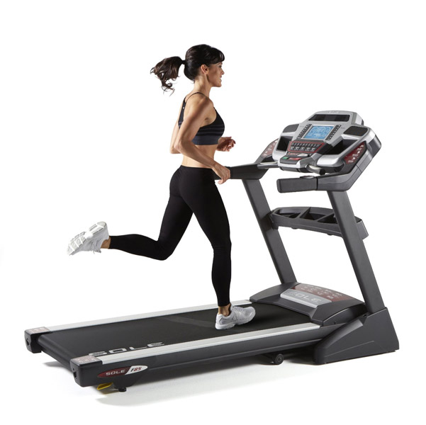
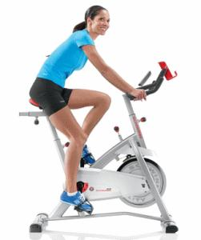

Treadmill เป็นการบริหารร่างกายที่ใกล้เคียงกับลักษณะการใช้ชีวิตประจำวัน สามารถปรับความเร็วของเครื่องได้ตั้งแต่เดินไปจนถึงวิ่งอย่างเต็มที่
Stationary bicycle การออกกำลังกายกับอุปกรณ์นี้เหมาะสำหรับคนที่เพิ่งเริ่มต้นบริหารร่างกายใหม่ๆ หรือผู้ที่มีร่างกายไม่ค่อยฟิตแข็งแรง
Elliptical trainer เป็นเครื่องที่ผสมผสานท่าทางการออกกำลังกายระหว่างการก้าวขึ้นบันได กับการเล่นสกี และมีการบริหารร่างกายทุกส่วน